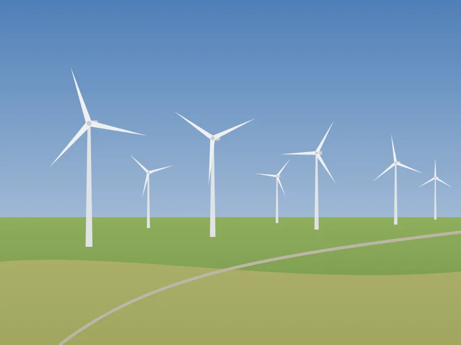

Renewable energy
Renewable energy
How a wind farm works
Twenty-seven turbines and one windy day: how a blade shaped like a wing turns moving air into power for the grid.
- Farm
- Blades
- Nacelle
- Curve
- Wakes
- Grid

Renewable energy
Twenty-seven turbines and one windy day: how a blade shaped like a wing turns moving air into power for the grid.
whatmakesittick.github.io/wind-farm